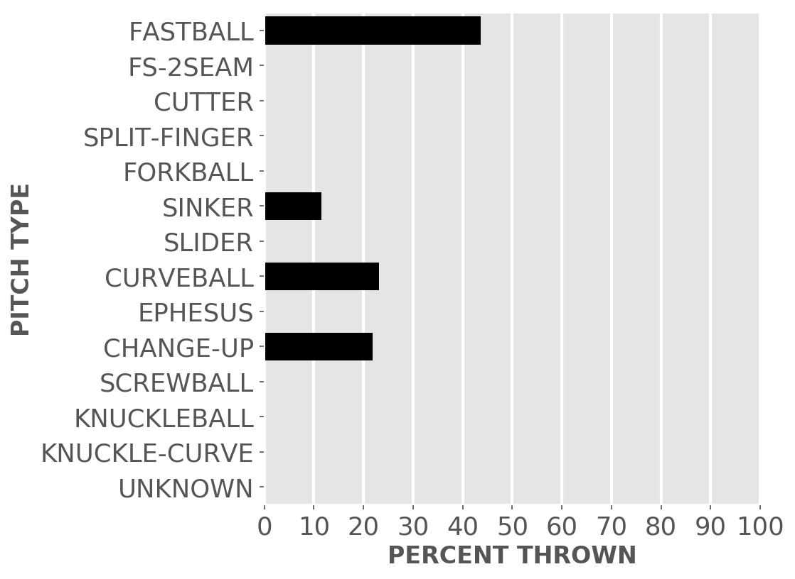

Chicago baseball
White Sox
A little-more-than-casual but not-very-wonky statistical look at the current season
Plenty of seats available to watch the kids learn how to play in the big league.
Updated Tuesday, May 21, at 9:20 a.m. Pybaseball gathers these from Baseball-reference.com.
Games
JUMP TO TOP | BATTERS | PITCHERS
On Monday, May 20, the Sox lost a day game at the Astros, 0 to 3, in 9 innings. The winning pitcher was Peacock, losing pitcher was Burr. Save: Osuna.
Next scheduled game: Tuesday, May 21, an away game at the Astros.
Summary results by team
| Team | Wins | Loses | Avg. Sox runs | Avg. runs against |
|---|---|---|---|---|
| Astros | 0 | 1 | 0.0 | 3.0 |
| Blue Jays | 4 | 3 | 3.86 | 3.57 |
| Indians | 4 | 4 | 3.75 | 3.75 |
| Mariners | 1 | 2 | 5.67 | 9.67 |
| Orioles | 3 | 3 | 5.33 | 4.83 |
| Rays | 0 | 3 | 2.33 | 8.0 |
| Red Sox | 1 | 3 | 2.75 | 8.5 |
| Royals | 3 | 3 | 4.67 | 4.17 |
| Tigers | 3 | 2 | 6.6 | 5.6 |
| Yankees | 2 | 1 | 4.67 | 4.0 |
Batters
JUMP TO TOP | GAMES | PITCHERS
Click the link under a player's name to get up-to-speed on a player at bat.
Jose Abreu #79, 1B
| Status (A = active) | A |
| Bats/Throws | R/R |
| Plate appearances | 198 |
| At bats | 181 |
| Hits | 47 |
| Home runs | 10 |
| Batting Avg. | 0.26 |

| Runs | 22 |
| RBI | 38 |
| On-base percent | 0.318 |
| Weighted OBP | 0.34 |
| Slugging % | 0.497 |
| Stolen bases | 2 |
| Caught stealing | 2 |
Other measures
| Weighted runs above avg. (wRAA) | 3.9 |
| Runs Above Replacement (RAR) | 2.8 |
| Fielding RAR | -1.3 |
| Wins above replacement (WAR) | 0.3 |
Yonder Alonso #17, 1B
| Status (A = active) | A |
| Bats/Throws | L/R |
| Plate appearances | 174 |
| At bats | 153 |
| Hits | 28 |
| Home runs | 6 |
| Batting Avg. | 0.183 |

| Runs | 18 |
| RBI | 20 |
| On-base percent | 0.282 |
| Weighted OBP | 0.266 |
| Slugging % | 0.327 |
| Stolen bases | 0 |
| Caught stealing | 0 |
Other measures
| Weighted runs above avg. (wRAA) | -7.3 |
| Runs Above Replacement (RAR) | -4.8 |
| Fielding RAR | 0.6 |
| Wins above replacement (WAR) | -0.5 |
Tim Anderson #7, SS
| Status (A = active) | A |
| Bats/Throws | R/R |
| Plate appearances | 172 |
| At bats | 164 |
| Hits | 54 |
| Home runs | 8 |
| Batting Avg. | 0.329 |

| Runs | 27 |
| RBI | 24 |
| On-base percent | 0.36 |
| Weighted OBP | 0.369 |
| Slugging % | 0.506 |
| Stolen bases | 13 |
| Caught stealing | 2 |
Other measures
| Weighted runs above avg. (wRAA) | 7.6 |
| Runs Above Replacement (RAR) | 13.1 |
| Fielding RAR | -4.2 |
| Wins above replacement (WAR) | 1.3 |
Welington Castillo #21, C
| Status (A = active) | A |
| Bats/Throws | R/R |
| Plate appearances | 91 |
| At bats | 78 |
| Hits | 14 |
| Home runs | 3 |
| Batting Avg. | 0.179 |

| Runs | 4 |
| RBI | 10 |
| On-base percent | 0.297 |
| Weighted OBP | 0.282 |
| Slugging % | 0.333 |
| Stolen bases | 0 |
| Caught stealing | 0 |
Other measures
| Weighted runs above avg. (wRAA) | -2.6 |
| Runs Above Replacement (RAR) | -2.3 |
| Fielding RAR | -3.1 |
| Wins above replacement (WAR) | -0.2 |
Ryan Cordell #49, CF
| Status (A = active) | A |
| Bats/Throws | R/R |
| Plate appearances | 90 |
| At bats | 77 |
| Hits | 19 |
| Home runs | 3 |
| Batting Avg. | 0.247 |

| Runs | 7 |
| RBI | 11 |
| On-base percent | 0.333 |
| Weighted OBP | 0.322 |
| Slugging % | 0.403 |
| Stolen bases | 2 |
| Caught stealing | 0 |
Other measures
| Weighted runs above avg. (wRAA) | 0.4 |
| Runs Above Replacement (RAR) | 1.1 |
| Fielding RAR | -1.6 |
| Wins above replacement (WAR) | 0.1 |
Leury Garcia #28, LF
| Status (A = active) | A |
| Bats/Throws | S/R |
| Plate appearances | 170 |
| At bats | 159 |
| Hits | 45 |
| Home runs | 2 |
| Batting Avg. | 0.283 |

| Runs | 30 |
| RBI | 15 |
| On-base percent | 0.32 |
| Weighted OBP | 0.3 |
| Slugging % | 0.371 |
| Stolen bases | 7 |
| Caught stealing | 1 |
Other measures
| Weighted runs above avg. (wRAA) | -2.3 |
| Runs Above Replacement (RAR) | 7.0 |
| Fielding RAR | 2.8 |
| Wins above replacement (WAR) | 0.7 |
Eloy Jimenez #74, LF
| Status (A = active) | A |
| Bats/Throws | R/R |
| Plate appearances | 89 |
| At bats | 83 |
| Hits | 19 |
| Home runs | 3 |
| Batting Avg. | 0.229 |

| Runs | 6 |
| RBI | 8 |
| On-base percent | 0.281 |
| Weighted OBP | 0.279 |
| Slugging % | 0.361 |
| Stolen bases | 0 |
| Caught stealing | 0 |
Other measures
| Weighted runs above avg. (wRAA) | -2.8 |
| Runs Above Replacement (RAR) | -5.2 |
| Fielding RAR | -4.0 |
| Wins above replacement (WAR) | -0.5 |
James McCann #33, C
| Status (A = active) | A |
| Bats/Throws | R/R |
| Plate appearances | 109 |
| At bats | 102 |
| Hits | 35 |
| Home runs | 4 |
| Batting Avg. | 0.343 |

| Runs | 16 |
| RBI | 11 |
| On-base percent | 0.385 |
| Weighted OBP | 0.392 |
| Slugging % | 0.539 |
| Stolen bases | 2 |
| Caught stealing | 0 |
Other measures
| Weighted runs above avg. (wRAA) | 7.0 |
| Runs Above Replacement (RAR) | 12.6 |
| Fielding RAR | -0.1 |
| Wins above replacement (WAR) | 1.3 |
Yoan Moncada #10, 3B
| Status (A = active) | A |
| Bats/Throws | S/R |
| Plate appearances | 194 |
| At bats | 176 |
| Hits | 50 |
| Home runs | 9 |
| Batting Avg. | 0.284 |

| Runs | 31 |
| RBI | 29 |
| On-base percent | 0.345 |
| Weighted OBP | 0.363 |
| Slugging % | 0.517 |
| Stolen bases | 4 |
| Caught stealing | 3 |
Other measures
| Weighted runs above avg. (wRAA) | 7.7 |
| Runs Above Replacement (RAR) | 14.7 |
| Fielding RAR | -0.7 |
| Wins above replacement (WAR) | 1.5 |
Jose Rondon #20, 2B
| Status (A = active) | A |
| Bats/Throws | R/R |
| Plate appearances | 67 |
| At bats | 64 |
| Hits | 14 |
| Home runs | 2 |
| Batting Avg. | 0.219 |

| Runs | 6 |
| RBI | 5 |
| On-base percent | 0.254 |
| Weighted OBP | 0.263 |
| Slugging % | 0.359 |
| Stolen bases | 0 |
| Caught stealing | 0 |
Other measures
| Weighted runs above avg. (wRAA) | -3.0 |
| Runs Above Replacement (RAR) | -2.8 |
| Fielding RAR | -2.4 |
| Wins above replacement (WAR) | -0.3 |
Yolmer Sanchez #5, 2B
| Status (A = active) | A |
| Bats/Throws | S/R |
| Plate appearances | 127 |
| At bats | 109 |
| Hits | 25 |
| Home runs | 1 |
| Batting Avg. | 0.229 |

| Runs | 12 |
| RBI | 7 |
| On-base percent | 0.32 |
| Weighted OBP | 0.281 |
| Slugging % | 0.303 |
| Stolen bases | 1 |
| Caught stealing | 1 |
Other measures
| Weighted runs above avg. (wRAA) | -3.7 |
| Runs Above Replacement (RAR) | -0.2 |
| Fielding RAR | -2.1 |
| Wins above replacement (WAR) | 0.0 |
Charlie Tilson #22, CF
| Status (A = active) | A |
| Bats/Throws | L/L |
| Plate appearances | 52 |
| At bats | 49 |
| Hits | 16 |
| Home runs | 0 |
| Batting Avg. | 0.327 |

| Runs | 7 |
| RBI | 3 |
| On-base percent | 0.365 |
| Weighted OBP | 0.323 |
| Slugging % | 0.367 |
| Stolen bases | 3 |
| Caught stealing | 0 |
Other measures
| Weighted runs above avg. (wRAA) | 0.3 |
| Runs Above Replacement (RAR) | 5.3 |
| Fielding RAR | 2.5 |
| Wins above replacement (WAR) | 0.5 |
Pitchers
Click the link under a player's name to get acquainted with who's on the mound. Click here for a description of these stats and more.
Manny Banuelos #58, P
| Status (A = active) | D10 |
| Bats/Throws | R/L |
| Wins | 2 |
| Losses | 3 |
| ERA | 7.26 |
| Caught stealing | 5 |
| Complete games | 0 |
| Shutouts | 0 |
| Saves | 0 |
| Blown saves | 0 |
Pitch types

Fastball = Four Seam and Unclassified Fastballs; FS-2seam = Two Seam Fastballs; Ephesuses are a really slow ball
| Average innings pitched | 3.4 |
| Strikeouts per 9 innings | 9.29 |
| Walks per 9 innings | 5.52 |
| Walks, hits per inning (WHIP) | 1.87 |
| Percent left on base | 75.0 |
| Percent first pitch strike | 54.6 |
Other measures
| Avg. run support | 15.0 |
| Opponents batting average | 0.315 |
| Batting avg. on balls in play | 0.354 |
| Fielding independent pitching | 7.06 |
| Win probability added (WPA) | -0.55 |
| Runs above replacement | -6.1 |
| WAR | -0.5 |
Aaron Bummer #39, P
| Status (A = active) | A |
| Bats/Throws | L/L |
| Wins | 0 |
| Losses | 0 |
| ERA | 0.0 |
| Caught stealing | 0 |
| Complete games | 0 |
| Shutouts | 0 |
| Saves | 0 |
| Blown saves | 0 |
Pitch types

Fastball = Four Seam and Unclassified Fastballs; FS-2seam = Two Seam Fastballs; Ephesuses are a really slow ball
| Average innings pitched | 1.1 |
| Strikeouts per 9 innings | 8.71 |
| Walks per 9 innings | 2.61 |
| Walks, hits per inning (WHIP) | 0.58 |
| Percent left on base | 85.7 |
| Percent first pitch strike | 65.8 |
Other measures
| Avg. run support | 2.0 |
| Opponents batting average | 0.088 |
| Batting avg. on balls in play | 0.125 |
| Fielding independent pitching | 2.31 |
| Win probability added (WPA) | 0.42 |
| Runs above replacement | 2.3 |
| WAR | 0.2 |
Ryan Burr #61, P
| Status (A = active) | A |
| Bats/Throws | R/R |
| Wins | 1 |
| Losses | 1 |
| ERA | 3.86 |
| Caught stealing | 1 |
| Complete games | 0 |
| Shutouts | 0 |
| Saves | 0 |
| Blown saves | 0 |
Pitch types

Fastball = Four Seam and Unclassified Fastballs; FS-2seam = Two Seam Fastballs; Ephesuses are a really slow ball
| Average innings pitched | 1.2 |
| Strikeouts per 9 innings | 8.2 |
| Walks per 9 innings | 3.38 |
| Walks, hits per inning (WHIP) | 1.23 |
| Percent left on base | 63.8 |
| Percent first pitch strike | 63.8 |
Other measures
| Avg. run support | 9.0 |
| Opponents batting average | 0.219 |
| Batting avg. on balls in play | 0.245 |
| Fielding independent pitching | 4.48 |
| Win probability added (WPA) | -0.19 |
| Runs above replacement | 0.4 |
| WAR | 0.0 |
Alex Colome #48, P
| Status (A = active) | A |
| Bats/Throws | R/R |
| Wins | 1 |
| Losses | 0 |
| ERA | 2.0 |
| Caught stealing | 0 |
| Complete games | 0 |
| Shutouts | 0 |
| Saves | 9 |
| Blown saves | 0 |
Pitch types

Fastball = Four Seam and Unclassified Fastballs; FS-2seam = Two Seam Fastballs; Ephesuses are a really slow ball
| Average innings pitched | 1.0 |
| Strikeouts per 9 innings | 9.0 |
| Walks per 9 innings | 2.5 |
| Walks, hits per inning (WHIP) | 0.67 |
| Percent left on base | 87.0 |
| Percent first pitch strike | 65.6 |
Other measures
| Avg. run support | 3.0 |
| Opponents batting average | 0.119 |
| Batting avg. on balls in play | 0.128 |
| Fielding independent pitching | 3.37 |
| Win probability added (WPA) | 0.97 |
| Runs above replacement | 2.4 |
| WAR | 0.2 |
Dylan Covey #68, P
| Status (A = active) | A |
| Bats/Throws | R/R |
| Wins | 0 |
| Losses | 2 |
| ERA | 4.41 |
| Caught stealing | 3 |
| Complete games | 0 |
| Shutouts | 0 |
| Saves | 0 |
| Blown saves | 1 |
Pitch types

Fastball = Four Seam and Unclassified Fastballs; FS-2seam = Two Seam Fastballs; Ephesuses are a really slow ball
| Average innings pitched | 3.2 |
| Strikeouts per 9 innings | 3.31 |
| Walks per 9 innings | 6.61 |
| Walks, hits per inning (WHIP) | 1.47 |
| Percent left on base | 70.7 |
| Percent first pitch strike | 59.5 |
Other measures
| Avg. run support | 7.0 |
| Opponents batting average | 0.194 |
| Batting avg. on balls in play | 0.17 |
| Fielding independent pitching | 6.95 |
| Win probability added (WPA) | -0.78 |
| Runs above replacement | -2.1 |
| WAR | -0.2 |
Jace Fry #57, P
| Status (A = active) | A |
| Bats/Throws | L/L |
| Wins | 1 |
| Losses | 1 |
| ERA | 6.35 |
| Caught stealing | 0 |
| Complete games | 0 |
| Shutouts | 0 |
| Saves | 0 |
| Blown saves | 1 |
Pitch types

Fastball = Four Seam and Unclassified Fastballs; FS-2seam = Two Seam Fastballs; Ephesuses are a really slow ball
| Average innings pitched | 0.8 |
| Strikeouts per 9 innings | 12.71 |
| Walks per 9 innings | 5.82 |
| Walks, hits per inning (WHIP) | 1.71 |
| Percent left on base | 64.5 |
| Percent first pitch strike | 51.3 |
Other measures
| Avg. run support | 16.0 |
| Opponents batting average | 0.269 |
| Batting avg. on balls in play | 0.375 |
| Fielding independent pitching | 4.5 |
| Win probability added (WPA) | -0.44 |
| Runs above replacement | 0.1 |
| WAR | 0.0 |
Lucas Giolito #27, P
| Status (A = active) | A |
| Bats/Throws | R/R |
| Wins | 5 |
| Losses | 1 |
| ERA | 3.35 |
| Caught stealing | 8 |
| Complete games | 1 |
| Shutouts | 0 |
| Saves | 0 |
| Blown saves | 0 |
Pitch types

Fastball = Four Seam and Unclassified Fastballs; FS-2seam = Two Seam Fastballs; Ephesuses are a really slow ball
| Average innings pitched | 5.4 |
| Strikeouts per 9 innings | 10.47 |
| Walks per 9 innings | 3.77 |
| Walks, hits per inning (WHIP) | 1.16 |
| Percent left on base | 70.5 |
| Percent first pitch strike | 61.1 |
Other measures
| Avg. run support | 27.0 |
| Opponents batting average | 0.205 |
| Batting avg. on balls in play | 0.282 |
| Fielding independent pitching | 3.0 |
| Win probability added (WPA) | 0.7 |
| Runs above replacement | 12.1 |
| WAR | 1.3 |
Kelvin Herrera #41, P
| Status (A = active) | A |
| Bats/Throws | R/R |
| Wins | 1 |
| Losses | 3 |
| ERA | 5.85 |
| Caught stealing | 0 |
| Complete games | 0 |
| Shutouts | 0 |
| Saves | 0 |
| Blown saves | 0 |
Pitch types

Fastball = Four Seam and Unclassified Fastballs; FS-2seam = Two Seam Fastballs; Ephesuses are a really slow ball
| Average innings pitched | 1.0 |
| Strikeouts per 9 innings | 8.1 |
| Walks per 9 innings | 3.6 |
| Walks, hits per inning (WHIP) | 1.5 |
| Percent left on base | 65.9 |
| Percent first pitch strike | 70.3 |
Other measures
| Avg. run support | 12.0 |
| Opponents batting average | 0.265 |
| Batting avg. on balls in play | 0.306 |
| Fielding independent pitching | 4.44 |
| Win probability added (WPA) | -1.0 |
| Runs above replacement | 1.1 |
| WAR | 0.1 |
Reynaldo Lopez #40, P
| Status (A = active) | A |
| Bats/Throws | R/R |
| Wins | 3 |
| Losses | 4 |
| ERA | 5.14 |
| Caught stealing | 10 |
| Complete games | 0 |
| Shutouts | 0 |
| Saves | 0 |
| Blown saves | 0 |
Pitch types

Fastball = Four Seam and Unclassified Fastballs; FS-2seam = Two Seam Fastballs; Ephesuses are a really slow ball
| Average innings pitched | 5.6 |
| Strikeouts per 9 innings | 8.68 |
| Walks per 9 innings | 4.02 |
| Walks, hits per inning (WHIP) | 1.5 |
| Percent left on base | 72.2 |
| Percent first pitch strike | 58.3 |
Other measures
| Avg. run support | 21.0 |
| Opponents batting average | 0.268 |
| Batting avg. on balls in play | 0.31 |
| Fielding independent pitching | 5.16 |
| Win probability added (WPA) | -0.22 |
| Runs above replacement | 5.4 |
| WAR | 0.5 |
Evan Marshall #43, P
| Status (A = active) | A |
| Bats/Throws | R/R |
| Wins | 0 |
| Losses | 0 |
| ERA | 0.0 |
| Caught stealing | 0 |
| Complete games | 0 |
| Shutouts | 0 |
| Saves | 0 |
| Blown saves | 0 |
Pitch types

Fastball = Four Seam and Unclassified Fastballs; FS-2seam = Two Seam Fastballs; Ephesuses are a really slow ball
| Average innings pitched | 1.0 |
| Strikeouts per 9 innings | 4.7 |
| Walks per 9 innings | 2.35 |
| Walks, hits per inning (WHIP) | 0.91 |
| Percent left on base | 100.0 |
| Percent first pitch strike | 50.0 |
Other measures
| Avg. run support | 3.0 |
| Opponents batting average | 0.192 |
| Batting avg. on balls in play | 0.227 |
| Fielding independent pitching | 2.83 |
| Win probability added (WPA) | 0.39 |
| Runs above replacement | 2.1 |
| WAR | 0.2 |
Juan Minaya #37, P
| Status (A = active) | A |
| Bats/Throws | R/R |
| Wins | 0 |
| Losses | 0 |
| ERA | 2.16 |
| Caught stealing | 0 |
| Complete games | 0 |
| Shutouts | 0 |
| Saves | 0 |
| Blown saves | 0 |
Pitch types

Fastball = Four Seam and Unclassified Fastballs; FS-2seam = Two Seam Fastballs; Ephesuses are a really slow ball
| Average innings pitched | 1.6 |
| Strikeouts per 9 innings | 11.88 |
| Walks per 9 innings | 4.32 |
| Walks, hits per inning (WHIP) | 1.44 |
| Percent left on base | 86.2 |
| Percent first pitch strike | 48.7 |
Other measures
| Avg. run support | 0.0 |
| Opponents batting average | 0.25 |
| Batting avg. on balls in play | 0.35 |
| Fielding independent pitching | 3.81 |
| Win probability added (WPA) | -0.04 |
| Runs above replacement | 0.6 |
| WAR | 0.1 |
Ivan Nova #46, P
| Status (A = active) | A |
| Bats/Throws | R/R |
| Wins | 2 |
| Losses | 4 |
| ERA | 7.42 |
| Caught stealing | 9 |
| Complete games | 0 |
| Shutouts | 0 |
| Saves | 0 |
| Blown saves | 0 |
Pitch types

Fastball = Four Seam and Unclassified Fastballs; FS-2seam = Two Seam Fastballs; Ephesuses are a really slow ball
| Average innings pitched | 5.2 |
| Strikeouts per 9 innings | 6.08 |
| Walks per 9 innings | 3.04 |
| Walks, hits per inning (WHIP) | 1.8 |
| Percent left on base | 63.9 |
| Percent first pitch strike | 59.6 |
Other measures
| Avg. run support | 29.0 |
| Opponents batting average | 0.34 |
| Batting avg. on balls in play | 0.366 |
| Fielding independent pitching | 5.56 |
| Win probability added (WPA) | -1.05 |
| Runs above replacement | 0.4 |
| WAR | 0.0 |
Josh Osich #64, P
| Status (A = active) | A |
| Bats/Throws | L/L |
| Wins | 0 |
| Losses | 0 |
| ERA | 3.77 |
| Caught stealing | 0 |
| Complete games | 0 |
| Shutouts | 0 |
| Saves | 0 |
| Blown saves | 0 |
Pitch types

Fastball = Four Seam and Unclassified Fastballs; FS-2seam = Two Seam Fastballs; Ephesuses are a really slow ball
| Average innings pitched | 1.3 |
| Strikeouts per 9 innings | 7.53 |
| Walks per 9 innings | 2.51 |
| Walks, hits per inning (WHIP) | 1.19 |
| Percent left on base | 96.5 |
| Percent first pitch strike | 68.4 |
Other measures
| Avg. run support | 2.0 |
| Opponents batting average | 0.245 |
| Batting avg. on balls in play | 0.243 |
| Fielding independent pitching | 5.88 |
| Win probability added (WPA) | -0.05 |
| Runs above replacement | -1.6 |
| WAR | -0.2 |
Carlos Rodon #55, P
| Status (A = active) | D10 |
| Bats/Throws | L/L |
| Wins | 3 |
| Losses | 2 |
| ERA | 5.19 |
| Caught stealing | 7 |
| Complete games | 0 |
| Shutouts | 0 |
| Saves | 0 |
| Blown saves | 0 |
Pitch types

Fastball = Four Seam and Unclassified Fastballs; FS-2seam = Two Seam Fastballs; Ephesuses are a really slow ball
| Average innings pitched | 4.9 |
| Strikeouts per 9 innings | 11.94 |
| Walks per 9 innings | 4.41 |
| Walks, hits per inning (WHIP) | 1.44 |
| Percent left on base | 63.9 |
| Percent first pitch strike | 55.1 |
Other measures
| Avg. run support | 23.0 |
| Opponents batting average | 0.236 |
| Batting avg. on balls in play | 0.322 |
| Fielding independent pitching | 3.49 |
| Win probability added (WPA) | -0.26 |
| Runs above replacement | 7.8 |
| WAR | 0.8 |
Jose Rondon #20, 2B
| Status (A = active) | A |
| Bats/Throws | R/R |
| Wins | 0 |
| Losses | 0 |
| ERA | 0.0 |
| Caught stealing | 0 |
| Complete games | 0 |
| Shutouts | 0 |
| Saves | 0 |
| Blown saves | 0 |
Pitch types

Fastball = Four Seam and Unclassified Fastballs; FS-2seam = Two Seam Fastballs; Ephesuses are a really slow ball
| Average innings pitched | 1.0 |
| Strikeouts per 9 innings | 0.0 |
| Walks per 9 innings | 0.0 |
| Walks, hits per inning (WHIP) | 2.0 |
| Percent left on base | 100.0 |
| Percent first pitch strike | 60.0 |
Other measures
| Avg. run support | 0.0 |
| Opponents batting average | 0.4 |
| Batting avg. on balls in play | 0.4 |
| Fielding independent pitching | 3.09 |
| Win probability added (WPA) | 0.0 |
| Runs above replacement | 0.1 |
| WAR | 0.0 |
Jose Ruiz #66, P
| Status (A = active) | A |
| Bats/Throws | R/R |
| Wins | 0 |
| Losses | 0 |
| ERA | 5.56 |
| Caught stealing | 0 |
| Complete games | 0 |
| Shutouts | 0 |
| Saves | 0 |
| Blown saves | 0 |
Pitch types
Fastball = Four Seam and Unclassified Fastballs; FS-2seam = Two Seam Fastballs; Ephesuses are a really slow ball
| Average innings pitched | 0.9 |
| Strikeouts per 9 innings | 7.15 |
| Walks per 9 innings | 4.76 |
| Walks, hits per inning (WHIP) | 2.29 |
| Percent left on base | 87.7 |
| Percent first pitch strike | 55.9 |
Other measures
| Avg. run support | 5.0 |
| Opponents batting average | 0.385 |
| Batting avg. on balls in play | 0.425 |
| Fielding independent pitching | 6.79 |
| Win probability added (WPA) | -0.3 |
| Runs above replacement | -1.7 |
| WAR | -0.2 |
JUMP TO TOP